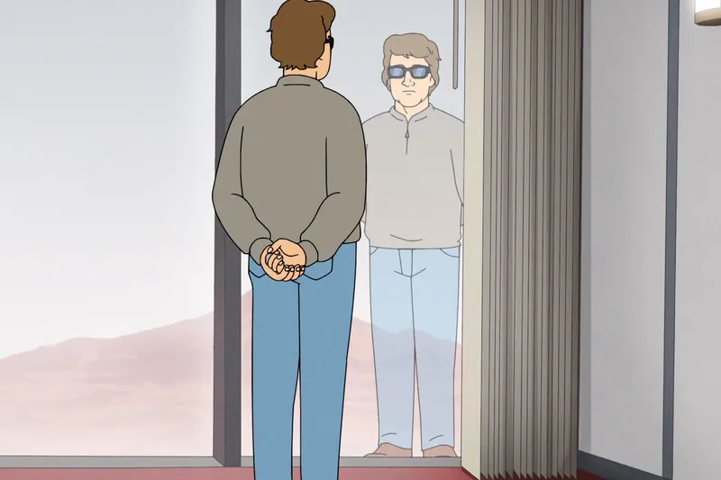
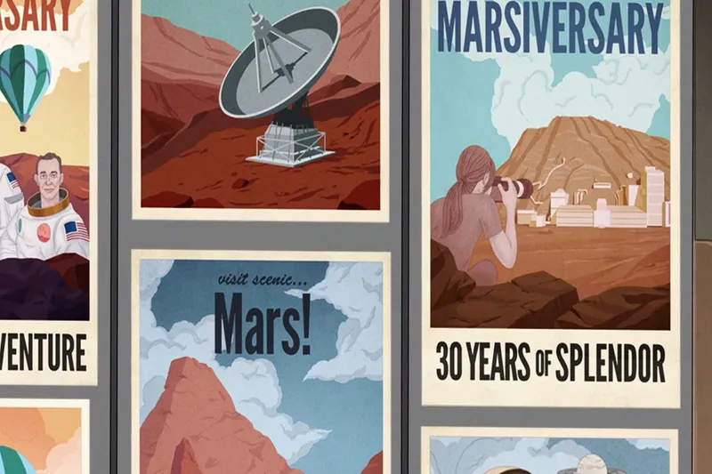
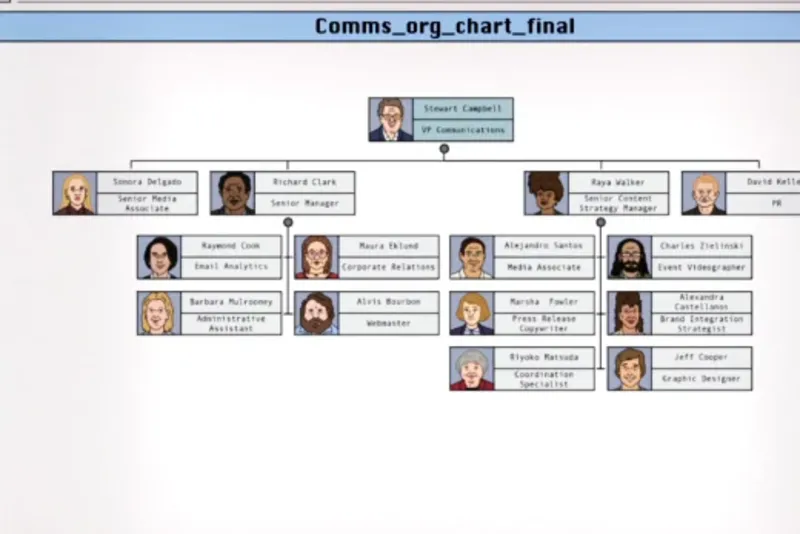
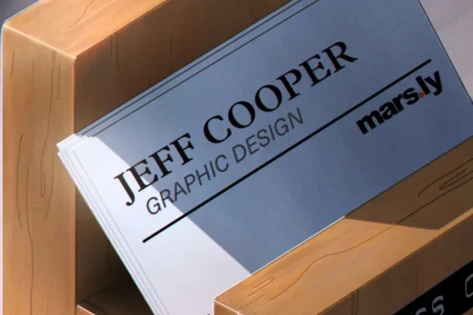

Jeff Cooper
Grafisk designer · Mars.ly, Mars
Om mig
Jag är grafisk designer, illustratör, fotograf, webbdesigner och bakar
då och då. Ja, jag lovar cupcakes.
Jag arbetade med identitet, skyltprogram och kampanjmaterial i sexton
år innan jag flyttade till Mars. Jag sökte tjänsten, blev erbjuden den
och skrev på samma vecka. Resan tog sju månader. Jag tycker att det
säger något om hur jag ser på ett uppdrag.
Sedan dess har jag haft sex roller inom samma organisation. Jag ser
omorganisation som en chans att lära känna verksamheten från ett nytt
perspektiv. Jag har arbetat med ledningens kommunikationsbehov,
internkommunikation, materialflöden ute på Marsytan och koloniens
proteinförsörjning. Få i yrket kan säga det.
Jag trivs i pressade miljöer, levererar snabbt och säger sällan nej.
Hittills har det inte funnits anledning att tacka nej till någonting.

Kunskaper
Design
- Visuell identitet
- Skyltprogram och vägvisning
- Affisch och kampanj
- Informationsdesign
- Nyhetsbrev med hundraprocentig räckvidd
- Kalendrar man ser fram emot
Metod
- Etikettdriven organisationsanalys enligt Frei
- Intressenthantering i stor grupp
- Förändringsledning ur medarbetarperspektiv
- Fullständig omarbetning med kort varsel
- Tillgänglig utanför kontorstid, alla dagar
Verktyg
- PaintStudio Pro, nivå Ace
- Design NOW, nivå Expert
- Drawster, nivå Advanced
Övrigt
- Mandarin, grundnivå
- Gitarr, påbörjad
- Ytarbete i rymddräkt
- Förebyggande av köldskador
- Finmotorik med fingerprotes
- Hållbara terrariesystem
Erfarenhet
-
Creative Director, Marsiversary 30
Mars.ly · innevarande år
Kampanjansvar för koloniens trettioårsjubileum. Framtagen i nära
dialog med ledningen. Tre koncept, samtliga godkända.
-
Driftansvarig, proteinodling
Mars.ly
Matning och tillväxtkontroll av koloniens proteinförsörjning. Två
matningar dagligen.
-
Logistikassistent, ytoperationer
Mars.ly
Materialflöde mellan två positioner på Marsytan. Daglig
inventering av underjordisk fauna.
-
Medarbetare, Dreamspiration
Mars.ly
Internkommunikation och ledningsstöd. Ansvar för avdelningschefens
dagliga rutiner.
-
Praktikant, Dreamspiration
Mars.ly
Ledningsstöd, korrespondens och beredning av dryck.
-
Grafisk designer
Mars.ly
Visuell identitet och kommunikationsmaterial för kolonin. Tjänsten
pausades efter sju månader i samband med en omprioritering.
-
Marketing Associate
Dynamic Marketing LLC · 14 år
Marknadsmaterial och kundleveranser. Fyra titlar under perioden.
Utbildning
Jag vidareutbildar mig löpande inom språk, musik och
organisationsteori. Senast mandarin på grundnivå. Dr. Freis bok om
etiketteori förändrade hur jag ser på en arbetsplats.
Projekt
Marsiversary 30

Creative Director, Mars.ly
Kampanj för koloniens trettioårsjubileum. Tre koncept, levererade
på två dagar efter att riktningen ändrats fullständigt.
Vad jag lärde mig: att ta emot feedback från samtliga intressenter
samtidigt.
Organisationskarta, Comms

Grafisk designer, Mars.ly
Informationsdesign över kommunikationsavdelningens femton
medarbetare och rapportvägar. Jag står längst ner till höger.
Vad jag lärde mig: att en organisationskarta kan vara inaktuell
samma morgon den presenteras.
Visuell identitet, eget visitkort

Eget arbete
Trycksak i två färger. Typografin satt med utgångspunkt i
avsändarens logotyp.
Vad jag lärde mig: att ett visitkort håller längre än den tjänst
som står på det.